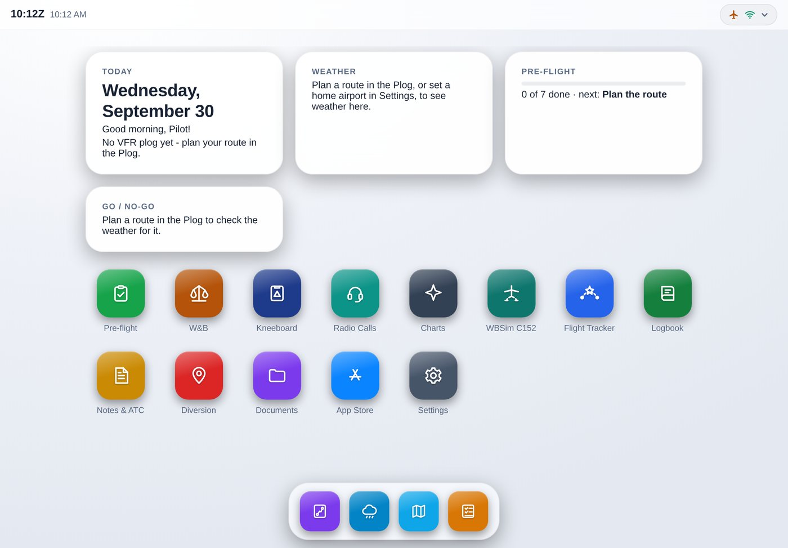
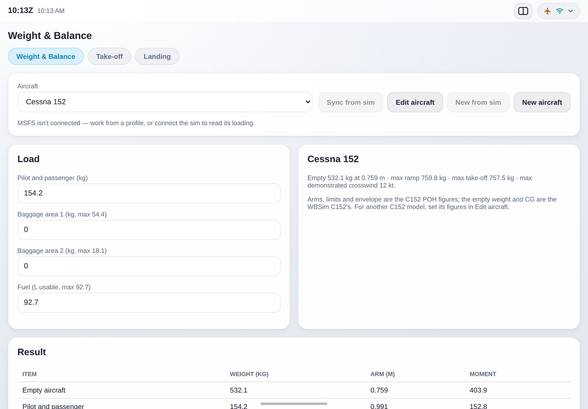
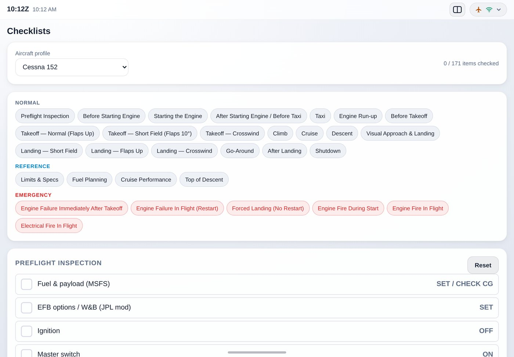

Your electronic flight bag
for MSFS 2024
Plan, brief and fly your sim flights from your iPad. GA-EFB runs on your PC alongside Microsoft Flight Simulator and works on any iPad, iPhone or tablet on your Wi-Fi, with no App Store download.
Windows 10 or 11 PC with Microsoft Flight Simulator 2024 · For flight simulation only

Everything for a VFR flight
Made for general aviation in the sim, with UK flying in mind: kilograms, litres, feet and hectopascals, UK airspace and charts. Airliner tools are one switch away.
VFR plog and route suggestions
Suggests a route round controlled airspace, danger areas and ATZs by reporting points, then works out headings, times and fuel with forecast winds. Imports Little Navmap and SkyDemon routes.
Weather and go/no-go
METARs and TAFs along your route, decoded and checked against your own limits for cloud, visibility and crosswind.
Weight and balance
For any aircraft, reading the loading straight from the sim, with take-off and landing distances. The Cessna 152 is built in, with its POH tables.
Checklists
Interactive normal and emergency checklists for the Cessna 152, Cessna 172S and Piper PA-28, opening the one for the aircraft you're flying.
Live from the sim
Your aircraft on the map, airspace warnings ahead of you, and the plog following you leg by leg with times and fuel against the plan.
Flight tracker and logbook
Every flight logged by itself like a paper logbook, with a landing report for every touchdown: rate, G, centreline and distance down the runway.
Charts and documents
UK aerodrome and VFR charts from the UK AIP, and your own charts and PDFs, such as your aircraft's POH.
Airliner tools too
SimBrief briefings, VATSIM traffic and ATC, and GSX Pro ground services, when you fly something bigger.
The same on every device
Your logbook, notes, plogs and settings go with your GA-EFB account, so your iPad, iPhone and PC all show the same things.

Weight and balance in seconds
Pick the aircraft, or let GA-EFB read it from the sim, and see your take-off weight and centre of gravity against the envelope.
Take-off and landing tabs work out the distance you need for the runway, the surface and the weather.
Checklists that follow the flight
Tick your way through each phase, from the pre-flight inspection to shutdown, with the emergencies one tap away.
The EFB's home screen puts the right checklist, chart and weather in front of you for each phase of the flight.

How it works
A small program runs on the PC you fly on and talks to the sim. Your iPad opens it over your home Wi-Fi.
- Download the GA-EFB Launcher and press Install. No administrator password and nothing else to install. It sets itself to start with MSFS 2024.
- Create your free GA-EFB account in the Launcher. Your 7-day trial starts the first time you use the EFB.
- Open the address the Launcher shows in Safari on your iPad and add it to your home screen. It opens full screen, like an app.
- Enjoy it? Buy it from the Launcher, the EFB or this page. It unlocks by itself within a few seconds, on all your devices.
Simple pricing
- Try everything free for 7 days first
- All updates included, installed by themselves
- Use it on all your own devices, with one account
- 14-day refund if it isn't for you
Buying here? Use the email address of your GA-EFB account at the checkout, and GA-EFB unlocks by itself. (Buying from the Launcher or the EFB does this for you.)
Payments are handled by Stripe, who sell GA-EFB on our behalf and look after tax, receipts and refunds.
Questions
Setting up or stuck? See the user guide. Anything else? Email leontgiscombe@hotmail.com.
What do I need?
A Windows 10 or 11 PC (64-bit) with Microsoft Flight Simulator 2024, an internet connection, and an iPad, iPhone, Android tablet or any computer with a modern web browser on the same Wi-Fi. You can also use GA-EFB in a window on the PC itself.
Does it work with Microsoft Flight Simulator 2020?
GA-EFB is made and tested for MSFS 2024. Much of it doesn't need the sim at all, but the live features are only supported with MSFS 2024.
Can I use it on a Mac?
The part that runs alongside the sim needs a Windows PC, as MSFS does. You can then use GA-EFB from a Mac, iPad or anything else with a web browser on the same network.
Do I need other subscriptions?
No. Some optional features use other services with their own free accounts: SimBrief for airliner flight plans and VATSIM for online traffic and ATC.
How many devices can I use it on?
All of your own. Your licence is tied to your GA-EFB account, so sign in to it on each device.
What happens after the free trial?
After 7 days GA-EFB asks you to buy it. Buy it from the Launcher, the EFB or this page, and it unlocks by itself, on all your devices. Your logbook, plogs and settings from the trial are all kept.
I bought it but it hasn't unlocked
If you bought it on this website, check you used the same email address as your GA-EFB account. If you used a different one, email us with both addresses and we'll sort it out. It can also take a minute: open the EFB again, or press Buy in the Launcher once more.
Can I get a refund?
Yes, within 14 days of buying. See the refund policy.
Can I use it for real flying?
No. GA-EFB is for flight simulation only. Nothing in it is approved or kept up to date for real aviation.